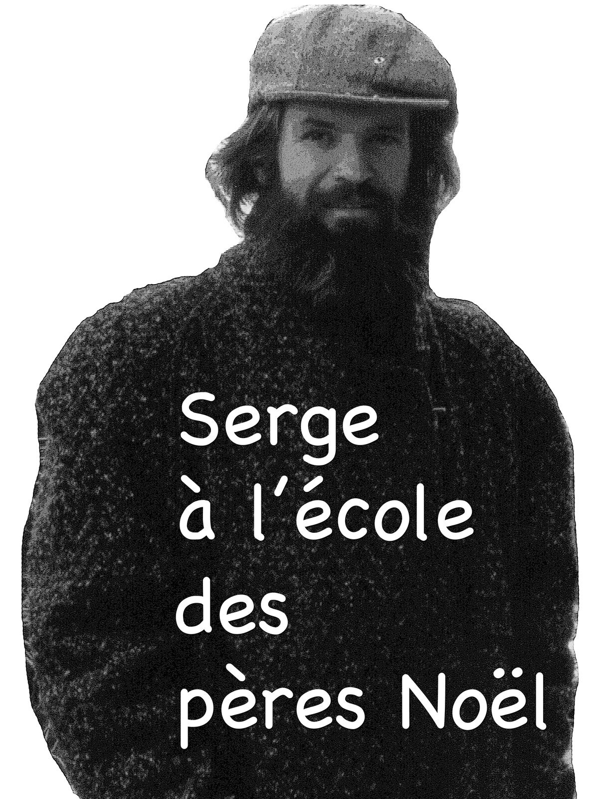

Qui suis-je ?

Trois jardins.
Étrange, dans un site web sur « Qui suis-je ? », d'arriver à 80 ans de silence. Et oui, je suis un silencieux, un solitaire. À 80 ans, on a du vécu. Ma vie est une expérience qui peut en inspirer d'autres — je ne suis pas un modèle, seulement un trajet parmi d'autres, que je partage parce que j'ai beaucoup de traces de ce parcours. Lire la suite →
Mes textes.
Des récits de vie, la mémoire familiale, des méditations sur la technologie, la nature et la contemplation.
Le regard sur le monde.
Le jardin, les saisons, les instants — une contemplation photographique sur trente ans. Cliquez sur une photo pour l'agrandir.
Une sélection parmi les galeries thématiques.
Poésie-Secours
Photographie, texte manuscrit, fond peint — des collages qui explorent la conscience et la crise écologique.
Dessins, collages, calligraphies.
« Resonance is not something you do — it is something you become. »Ginny Whitelaw — Resonate: Zen and the Way of Making a Difference
 Regarder sur YouTube →Ginny Whitelaw — Resonate
Regarder sur YouTube →Ginny Whitelaw — Resonate
Mes balados.
Des réflexions parlées sur la pratique contemplative, le corps et la présence. Appuyez sur ▶ pour écouter.
Mes vidéos.
Explorations filmées sur la pratique contemplative, le jardin et la création avec l'IA.